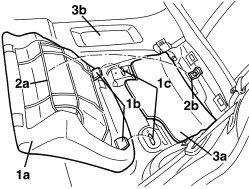

7050A22 REAR SEAT CUSHION - R+R
- Path
- Procedures > 70 FITTINGS > 7050 REAR SEATS > 7050A REAR SEAT ASSEMBLY > 7050A22 REAR SEAT CUSHION - R+R
- Kind
- repair procedure (removal / refitting; the operation number is the code)
- Applies to
- all engines; all production periods
- Interactive page
- https://sloeber94.github.io/elrnDB-aBrrSpdr/en/#/946002664
Applies to: all engines; all production periods
 Removing
Removing
 Refitting
Refitting1. Lift up the cushion (1a) at the front and release the retainers (1b) from the seats (1c).
2. Remove the cushion from the housing releasing the bracket (2a) from the hook (2b).
3. If necessary, remove the sound insulation (3a) after having removed the other cushion and the rear cover (3b).
Op. 7040L22 REAR COVER ON TUNNEL - R.R.

Applies to: all engines; all production periods
Refitting
Removing- Check that the cushion is not damaged.
- If removed, place the sound insluation lining in position, then refit the rear cover.
Op. 7040L22 REAR COVER ON TUNNEL - R.R.
- Check that the cushion retainers, hooks and mounting brackets are intact.
- Refit the cushion attaching the retainers, hooks and brackets correctly.
Topics linked from this page (1)
Topics that link to this page (43)
- 1040A10 FUEL TANK - R + R AND DECANT FUEL
- 1040A14 FUEL TANK - R + R FOR REPLACEMENT
- 1040A70 SUBMERGED PUMP ASSEMBLY COMPLETE WITH LEVEL GAUGE CONTROL - R + R
- 1040B36 REAR FUEL DELIVERY LINE - R.R
- 1040B56 REAR FUEL RETURN PIPE - R.R.
- 5505A68 CABLE LOOM FOR CONSOLE UNDER DASHBOARD AND/OR TUNNEL COVER - R.R. OR REPLACE
- 5570T28 CONTROL UNIT FOR RADIO AERIAL - R.R.
- 5570T61 MULTI-FUNCTION AERIAL - R.R.
- 5570T96 REAR SIDE SPEAKER (ONE), LEFT OR RIGHT- R.R
- 5580C40 SIDE BAG SENSOR (ONE), LH OR RH - R.R.
- 5580C50 WINDOW BAG MODULE (ONE) LH OR RH - R.R
- 5580E34 CAR ANTI-THEFT DEVICE ANTI-LIFT SENSOR - R.R. FOLLOWING ELECTRICAL CIRCUIT CHECK
- 5580H12 PARKING OBSTACLE DETECTION DEVICE BUZZER - R.R.
- 7030L10 TRANSPARENT ROOF PANEL - R.R.
- 7030L11 TRANSPARENT ROOF PANEL - R.R. FOR VERSIONS WITH SUN BLIND
- 7030L12 TRANSPARENT ROOF PANEL COVER - R.R.
- 7030L20 SUN BLIND ASSEMBLY - R.R.
- 7030L21 SUN BLIND ASSEMBLY - ALIGNMENT
- 7030L22 SLIDING SUN BLIND - R.R.
- 7030L23 SUN BLIND CROSSMEMBER - R.R.
- 7030L24 SLIDING BLIND MOVEMENT MOTOR - R.R.
- 7030L25 SLIDING BLIND DRIVE CABLES - R.R.
- 7030L26 SLIDING BLIND RETAINING CLIP (ONE), LEFT OR RIGHT - R.R.
- 7035C14 FIXED REAR SIDE WINDOW (ONE) LEFT OR RIGHT - R.R INCLUDES CLEANING HOUSING
- 7040H10 ROOF PANEL LINING - R.R.
- 7040H42 REAR PILLAR TRIM (ONE), LEFT OR RIGHT- R.R
- 7040H50 REAR PANEL (ONE), LEFT OR RIGHT - R.R
- 7040H51 ODDMENTS POCKET ON REAR SIDE PANEL (ONE), LEFT OR RIGHT - R.R.
- 7040H53 MOULDING ON REAR SIDE PANEL (ONE), LEFT OR RIGHT - R.R.
- 7040H54 GRILLE FOR SPEAKER IN REAR SIDE PANEL (ONE), LEFT OR RIGHT - R.R.
- 7040H55 COVER ON REAR SIDE PANEL (ONE), LEFT OR RIGHT - R.R.
- 7040L10 PASSENGER COMPARTMENT FLOOR COVERING - R.R.
- 7040L20 TUNNEL COVER - R.R
- 7040L22 REAR COVER ON TUNNEL - R.R.
- 7050A13 SPLIT REAR SEAT LEFT BACKREST - R.R.
- 7050A14 SPLIT REAR SEAT ASSEMBLY - R+R
- 7050A15 SPLIT REAR SEAT RIGHT BACKREST - R.R.
- 7050D30 TRIM FOR REAR SEAT BACKREST - R.R.
- 7050D34 TRIM FOR LEFT REAR SEAT BACKREST (TWO SEATER) - R.R.
- 7050D36 TRIM FOR RIGHT REAR SEAT BACKREST (INDIVIDUAL) - R.R.
- 7065A12 FRONT SEAT BELT (ONE), LEFT OR RIGHT, WITH PRETENSIONER ON REEL - R.R
- 7065B10 REAR SEAT BELT (ONE), LEFT OR RIGHT - R.R.
- 7065B14 ANCHORAGE ROD FOR (ONE) REAR SEAT BELT LEFT OR RIGHT - R.R.